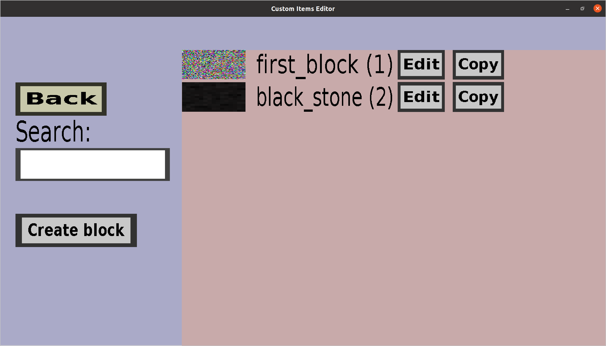

The block overview shows all your custom blocks and their IDs. From the
block overview, you can also create new blocks and edit existing blocks.
If you have 2 custom blocks, it should look like this:

On the left, there is:
-
a Back button. Clicking it will take you back to the
item set edit menu.
-
a Search field. If you type anything in this field,
only the blocks whose name contains the typed text will be
shown. Use this to find blocks if you have many.
-
a Create block button. Clicking it will take you
to the block edit menu, where you can
create a new custom block.
The actual list of custom blocks is shown on the right.
- The name of each custom block is shown on the right of its texture.
-
The numertical ID of each custom block is shown between
brackets on the right of the blocks name. See
this page for technical information about numerical IDs.
-
Clicking the Edit button of a custom block will take you
to the block edit menu, where you can edit
the corresponding block.
-
Clicking the Copy button will also take you to the block
edit menu. There, you will be able to create a new custom block,
but all fields will automatically be filled in with the values
of the original block. You will need to change at least the name
before you can finish the copy.